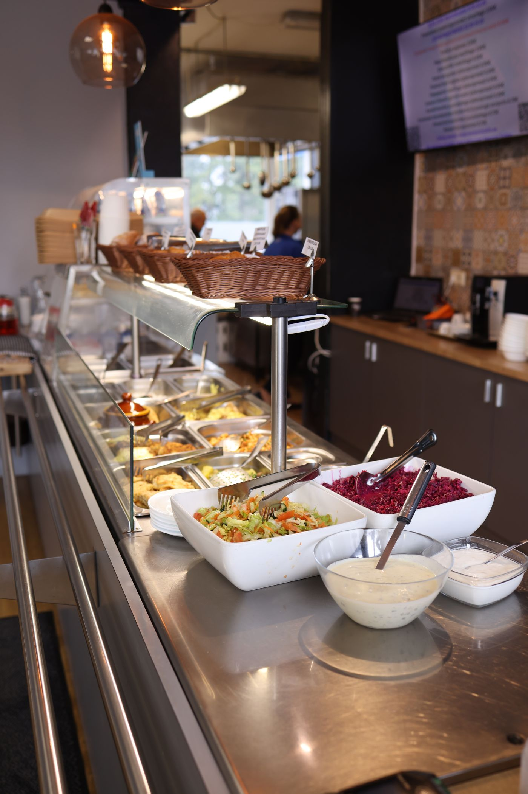

Корпоративное питание
По новости на сайте (07.01.2023): направление «корпоративное питание сотрудников на строительных площадках».
условия и цена — уточняется
Выберите, что нужно — корпоративное питание, банкет или доставку, — и удобное время: заявка придёт администратору в Telegram.

Это концепт. С вашими фото и правками будет ещё лучше
Направления и условия — с главной страницы сайта «Мандарина».
По новости на сайте (07.01.2023): направление «корпоративное питание сотрудников на строительных площадках».
Дни рождения, юбилеи, свадьбы, детские праздники. Зал до 50 гостей, свои напитки, фрукты и сладкий стол — можно.
На сайте: «доставка готовых блюд на дом».
Кафе-столовая с домашней кухней и раздачей. Раздел «Меню дня» есть на сайте.
Что нужно → детали → когда → телефон. Это рабочий макет: попробуйте.
Выберите, с чем обращаетесь.
Это нужно, чтобы администратор сразу посчитал объём.
Время — по Омску. Часы на сайте и в Яндекс Картах различаются — время звонка подтвердит администратор.
Так это будет работать: администратор получает заявку с типом, деталями и временем и перезванивает, чтобы всё уточнить. Сейчас это макет — ничего не отправлено и не сохранено.
Часы на сайте и в Яндекс Картах различаются — показываем оба варианта.
По сайту: пн–пт 9:00–19:00, сб–вс 9:00–18:00. В Яндекс Картах: пн–пт 8:00–18:00, сб 8:00–17:00, вс 8:00–15:00.
По сайту: пн–пт 9:00–17:00, сб–вс выходной. На сайте есть новость о переезде на Жукова, 72 (20.03.2022).
Только то, что опубликовано на сайте и в Яндекс Картах.
По сайту: минимальная сумма заказа — 2 000 ₽ на гостя, зал до 50 человек. Свои алкогольные и безалкогольные напитки, фрукты и сладкий стол — можно.
На сайте есть только анонс направления (питание сотрудников на строительных площадках). Формат, меню и цена — уточняются.
Цены меню дня на главной не опубликованы — уточняются.
Жукова, 72 по сайту: пн–пт 9:00–19:00, сб–вс 9:00–18:00; в шапке сайта — пн–пт 9:00–17:00; в Яндекс Картах — пн–пт 8:00–18:00, сб 8:00–17:00, вс 8:00–15:00. Актуальные часы уточняются.
Омск, ул. Маршала Жукова, 72.
Часы — уточняется
В Яндекс Картах указаны и другие номера — какой основной для заявок, уточняется.